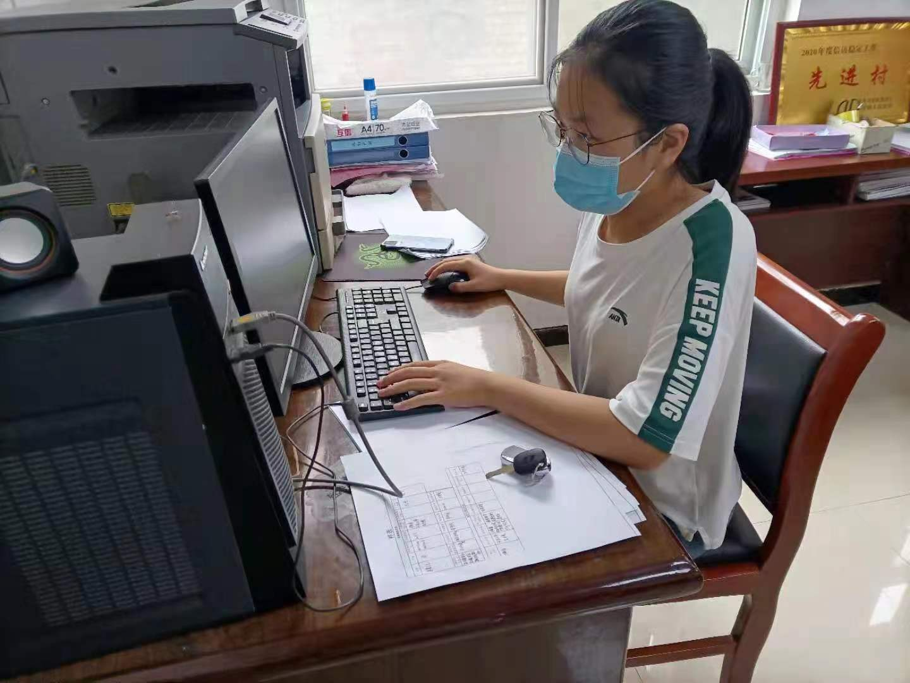

学生工作
- 大二担任工程志协事务部主要负责人
- 2020-2021五四表彰优秀共青团员
- 2021-2022五四表彰优秀学生干部
- 即将任职工程学院2022级新生辅导员助理

志愿服务
- 2020-2021年度院级优秀志愿者
- 2021年县级优秀大学生志愿者
- 2021-2022年度校级优秀志愿者

学术科研
- 基于反向推荐算法对“信息茧房”问题的探究与优化——以抖音为例
- 基于对比学习的文章类型判别对“信息茧房”问题的探究与优化——以今日头条为例
- 基于区块链的艺术品数字资产的确权流通系统
社会实践
- 乡村振兴战略下基于大数据技术如何推动与优化乡村旅游业发展的调查与研究——以云南黑井镇为例
- 共襄双碳盛举，构架绿色建筑——基于石家庄市建筑节能保温材料